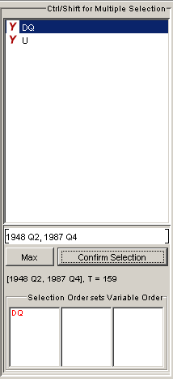

Select Panel
The select panel appears whenever variables should be
selected from the set of available series. By clicking the
RIGHT mouse button over the selected time series, a popup
menu appears. Depending on the modelling context it is
sometimes only possible to select one endogenous variable.
The select panel computes the data matrices to be used in the
procedures. It operates according to the following rules:
-
Every selection has to be finished with the
CONFIRM SELECTION button (variables, order, and range).
-
The order of the selection is taken into account and can be
checked in the list. The variable that has been selected
first appears on the top.
-
Only series with the same frequency can be selected
together.
-
Only series with overlapping time ranges can be selected
together. The start and end dates adjust automatically if
the selected range does not match. The longest possible
range can be set via clicking the MAX button.
